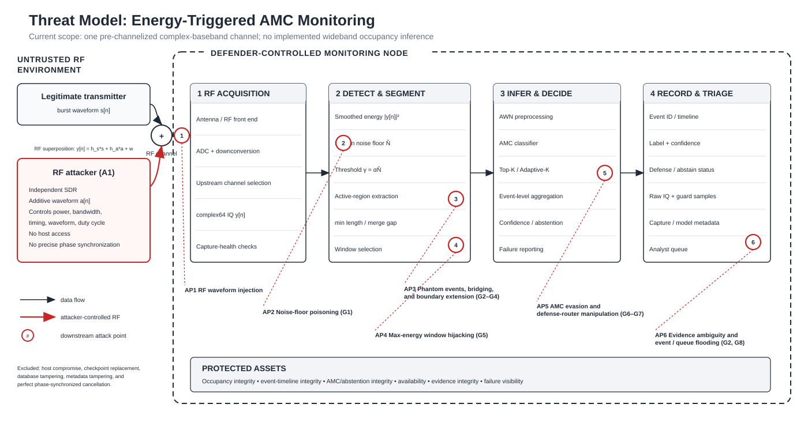
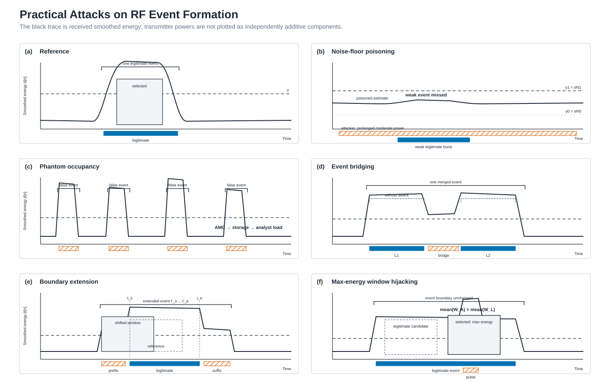
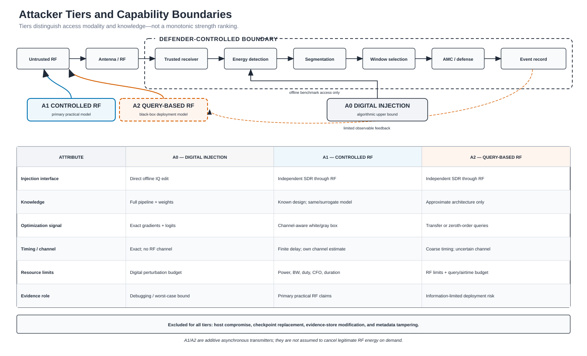
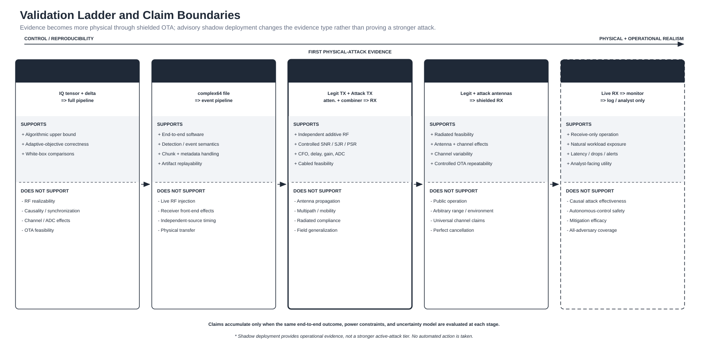

Practical Spectrum-Sensing Threat Model
Print-friendly, paper-oriented SVG figures. Open each SVG separately for vector export.
Figure 1 — End-to-end threat model

Figure 2 — Practical RF attack mechanisms

Figure 3 — Attacker tiers

Figure 4 — Validation ladder
